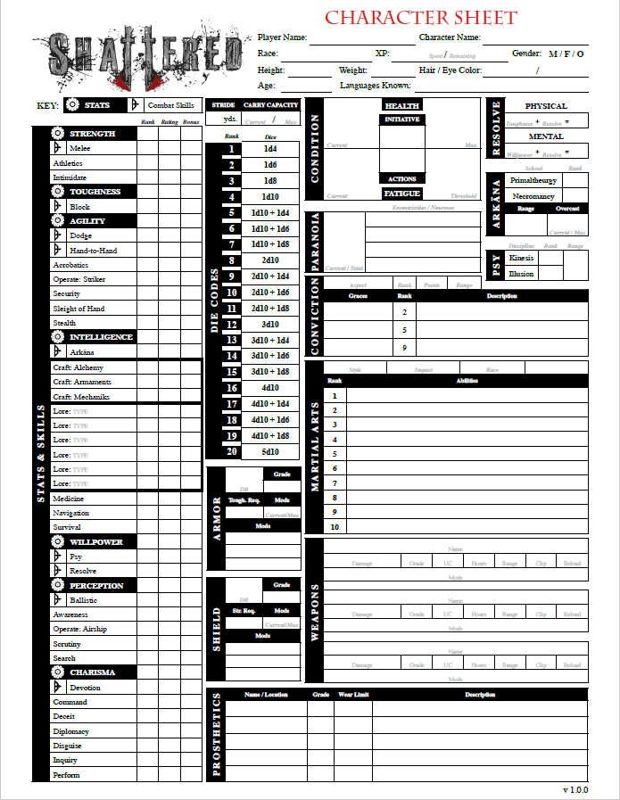

Put simply, tabletop RPGs are collaborative storytelling: the players each manage the actions and speech of a single character, and the Game Master (GM) handles everything
else: the other characters, setting pieces, and story elements. So how do we get there? We need to create a character, then learn how to roll the dice.
Creating a Character

Creating a character starts by acquiring a character sheet. Once you have a sheet, you'll need to sit down and make some decisions on
what kind of character you want to play. Unlike most other RPGs, Shattered is a "classless" game: instead of picking a class like rogue or wizard, you gain
experience through gameplay that you can turn around and spend on your choice of stats, skills, and talents. Shattered is full of options in that regard: we've got talents to
create characters proficient in swordfighting, magic, piloting airships, and even skills like armorcrafting and alchemy! Once you've built your character, it's time to get
some dice.
Fate in Your Hands
Like most RPGs, Shattered uses dice for confliction resolution. Whenever players attempt something in the game that has a risk of failure, they will roll dice. Unlike
other RPGs, Shattered uses a unique die set called the Multi-Die System (MDS). By adding together your ranks in related stats and skills, you get a rating, which
determines which dice to roll. A rating of 1, the smallest possible rating, means the player rolls 1d4 (shorthand for 1 die that has 4 sides; 2d6 then is two dice with six
sides [the most common kind of die]). Each increase in rating, increases the die size: a 2 gives 1d6, a 3 is 1d8, and a rating of 4 is 1d10. At this point we introduce a
feature called the Die Wrap. At a rating of 5, you keep the 1d10 and add a 1d4. This new die continues to evolve like its predecessor. This continues all the way
up to a rating of 20, which provides 5d10. This system guarantees a constant sensation of character growth. It also creates a sense of dread early on with some difficult
encounters being nearly impossible, with a great sense of power later as those same 'challenges' become nearly impossible to fail.
Getting the Gang Together
Once you and your friends have your characters ready to go, it's time to get together and play. What would that look like? Take a look!